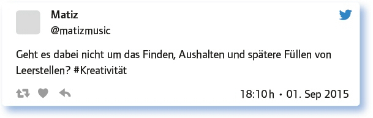
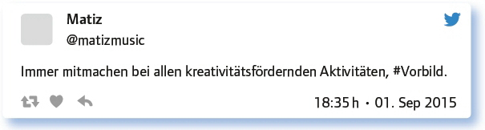
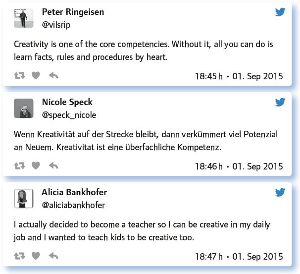

von Peter Ringeisen
Das Summer-Special um die Frage, wie es gelingen kann, Kreativität im Unterricht zu fördern, schlugen Matthias Förtsch (@herr_foertsch) und Alicia Bankhofer (@aliciabankhofer) vor. Kreativität mag zunächst so klingen, als wäre das etwas für das Fach Kunsterziehung oder vielleicht noch für die Fantasieerzählung im Fach Deutsch. – Aber natürlich erfordert auch das Finden eines Lösungsweges in Mathematik kreatives Herangehen, und vermutlich fallen jedem für sein Fachgebiet Situationen und Aufgabenstellungen ein, in denen Kreativität gefragt ist.
Um am Bekannten anzuknüpfen, eröffnete das Summer-Special-Team mit der Frage:
Krea… was? Wo bist du heute schon kreativ gewesen?
Die Antworten zeigen, dass sowohl in der Schule als auch im Lehrer-Alltag Gelegenheit zu Kreativität gegeben war:
Ich arbeite gerade an einer kreativen Wandgestaltung im Wohnzimmer zu unserer großen Leidenschaft, den Brettspielen.
Ich war heute schon kreativ bei der Sketchnote-Instagram-Challenge #frauhoellewaere- stolz: https://t.co/OYDYYVdfXo
Ich habe ein Sessionangebot für das #ecBER15 zu Ende gedacht.
Ich hab für meinen MUD (textbasiertes Online-Rollenspiel) einen Blogpost verfasst. Und werde wohl bald dort mitschreiben.
Nach diesem Einstieg ging es ums Grundsätzliche, und die Antworten waren erfrischend kreativ, konzentrierten sich aber zunächst auf die erste Hälfte der Frage:
Wie würdest du Kreativität definieren und warum ist sie wichtig?


Urs Henning schließlich gab eine Antwort auf die Frage, warum Kreativität wichtig ist:
Vom Allgemeinen zur Kreativität im Klassenzimmer führte die nächste Frage:
Wie sieht es aus, wenn Lernende kreativ im Unterricht sind? Her mit den Beispielen!
Einige Teilgeber äußerten sich zum Arbeitsklima bei kreativer Arbeit im Unterricht. Zum Teil wurde berichtet, es werde „ruhig, konzentriert und fokussiert“ gearbeitet, zum Teil hieß es, das lasse sich nicht verallgemeinern, da es von der Art des Arbeitsauftrags und von der individuellen Zusammensetzung der Gruppen und Klassen abhänge. Anschaulich zeigten zahlreiche Beispiele, wie angewandte Kreativität im Klassenzimmer aussehen kann:
Zum Beispiel (Buch-)Vorträge als Filmpräsentationen: http://t.co/5qgPsZTnVq
Papier, Bleistift, Bleistift durch Papier gestochen. Damit Normalform der Ebene erklärt.
Seminarkurs, der Song schreibt und vermarktet: https://t.co/mOBCIjPQE4
Manche kreative Produkte meiner Schüler sind hier auf der Pinterest-Plattform zu finden: https://t.co/1wfyx7EcNC
Für den Geografieunterricht verwendet, um Folge von Erdbeben zu demonstrieren: http://t.co/8DGt0M5fLU
Theaterstück „ROT ist tot“ in Anlehnung an Max Frischs „Andorra“: http://t.co/PaUSTQFhmy
Schüler schreiben und performen Musical selbst: http://t.co/BSdQU8NV4Z
Im Folgenden ging es um einen Erfahrungsaustausch über unterschiedliche Wege zur Kreativitätsförderung.
Nenne eine konkrete Methode, mit der man Kreativität im Unterricht fördern kann.
Ein Teil der Antworten bezog sich auf Bedingungen, unter denen Kreativität gelingen kann, ein anderer Teil auf Beispiele (mit Links).
Kreatives Schreiben, Brainstorming, Denkhüte, Zukunftswerkstatt, BarCamp …
Hier hatte ich mal weitere kreative mündliche Formate aufgelistet: http://t.co/40GiwEzup6
Szenariotechnik, Ein-Satz-Kurzgeschichten, Zeit lassen!
Vorübergehend das reflektierende Bewusstsein ausschalten wie beim Blitzschach oder beim Tanz.
Wichtig ist vor allem die stete Ermutigung, eigene Ideen zu verfolgen, zu Ende zu denken und zu präsentieren. Egal, wie.
Methoden ohne entsprechend offenes Lernsetting sind schwierig. Dann aber: Darstellendes Spiel, Theater, Poetry Slam, Projekte.
Nun wurden die Teilgeber gezielt um persönliche Erfahrungen gebeten, die den Umgang der einzelnen Lehrperson mit Kreativität zeigten.
Wie bist DU als Lehrende(r) kreativ? Einstiege? Lernspiele?

Im Anschluss daran stellten die Moderatoren die Frage nach der Vergleichbarkeit der Fächer in punkto Kreativität, also ob einem in manchen Unterrichtsfächern die Kreativität nur so zufliege, während es in anderen weniger schöpferisch zugehe. Hier waren sich die meisten einig, dass Kreativität in allen Fachbereichen eine große Rolle spielt.
Gibt es Fächer, bei denen es leichter ist, kreativ zu sein, z. B. musikalische oder bildnerische Erziehung?
Kreativ kann man in jedem Bereich sein, wenn man es darf. :-)
Kreativität ist keine Frage des Inhalts. Vielleicht lässt sie sich eher als Geisteshaltung erklären, die immer anwendbar ist.
Kaum ein Fach kommt heute ohne Kreativität aus. Auch Mathe, Deutsch, Informatik nicht. Programmieren ist Kreativität schlechthin.
Wenn nun Kreativität so verbreitet ist – hat man im Unterricht überhaupt Zeit dafür?
Bleibt in Zeiten von Kompetenzorientierung noch Zeit für Kreativität? Oder ist Kreativität eine Kernkompetenz?

Die abschließende Frage hatte die Kollegen an der Schule im Blick, die möglicherweise noch (zu) wenige kreative Arbeits- und Aufgabenformen einsetzen.
Wie kann man Kollegen ermuntern, Kreativität in ihrem Unterricht zu fördern? Sonstige Anregungen?
Projekte gemeinsam mit Kollegen planen und durchführen.
Gegenseitige Unterrichtshospitationen, „Klassenräume öffnen“.
Mit Best-practice-Beispielen und Lehrerzimmergesprächen Lust an Kreativität im Unterricht generieren.
Weitere Informationen zu diesem Thema:
71. #EDchatDE: „How schools kill creativity“ (Sir Ken Robinson), 10. 03. 2015 https://edchatde.wordpress.com/2015/03/09/zur-vorbereitung-des-71-edchatde-how-schools-kill-creativity-sir-ken-robinson/
119. #EDchatDE: Modelle für 4K-Lernprozessgestaltung (Kreativität, Kritisches Denken, Kommunikation, Kollaboration), 15. 03. 2016 https://edchatde.wordpress.com/2016/03/13/zur-vorbereitung-des-119-edchatde-am-15-03-16-modelle-fuer-4k-lernprozessgestaltung-kreativitaet-kritisches-denken-kommunikation-kollaboration/
Link zum vollständigen Protokoll: